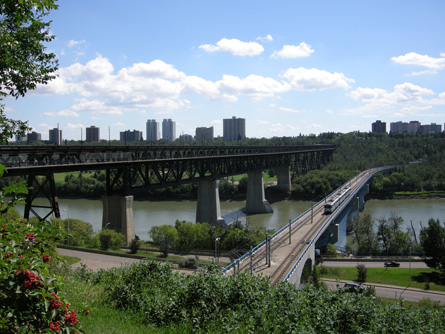

Module 3—Electrochemical Reactions
 Big Picture
Big Picture

In 1995, the High Level Bridge in Edmonton, Alberta, underwent a major restoration in which approximately 45 tonnes of rusted steel were replaced, and 100 000 litres of paint were applied. How could so much rust form? Why was paint applied at the end of the restoration?
Look around and you will see many metal objects. Metals are heavily used by society because of their properties. For example, metals are electrical conductors, are strong, and can be made into different shapes.
One negative property of metals is their reactivity. The performance of metals can be negatively affected when metals undergo chemical change. Metal performance is an issue in large structures such as bridges and in small devices that use metals to conduct electric current.
You will learn many theoretical concepts in Module 3. It is important that you identify where you are able to use these theoretical concepts to predict and explain your observations and where you are not able to do so.
In Module 4 you will investigate many technological applications of the main theoretical concept of Module 3—reduction-oxidation reactions. Successfully applying your theoretical knowledge to new situations will help you in Module 4.
 Assessment in This Module
Assessment in This Module
Each lesson contains a range of activities and assessment options. These include assignments, labs, and Self-Check, Try This, Discuss, Reflect and Connect, and Reflect on the Big Picture activities. Instructions will be provided for each of these activities so that you can appropriately focus your time and effort. Your teacher will tell you which assessment options to complete and which responses to submit for marks or feedback. Remember to save all of your work in your Chemistry 30 folder.
In the Module 3 Assessment you will apply your knowledge of electrochemical change to describe the electrochemical basis behind methods of preventing corrosion.
You may wish to look at the Module Assessment and the Unit Assessment before starting Lesson 1.